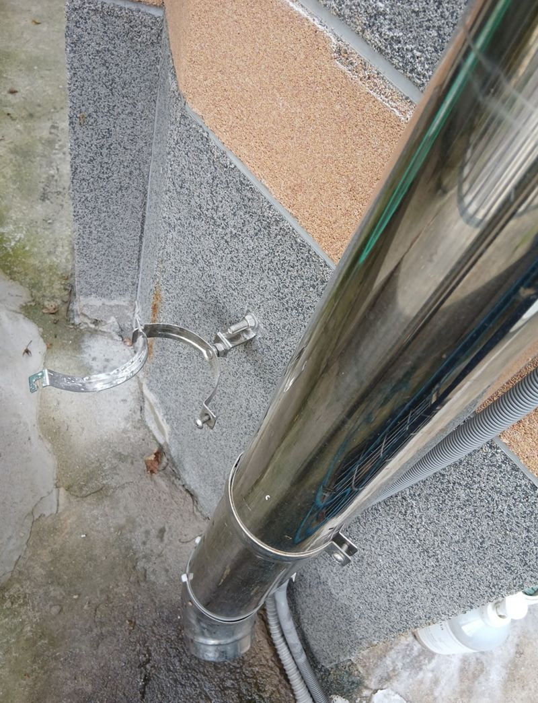
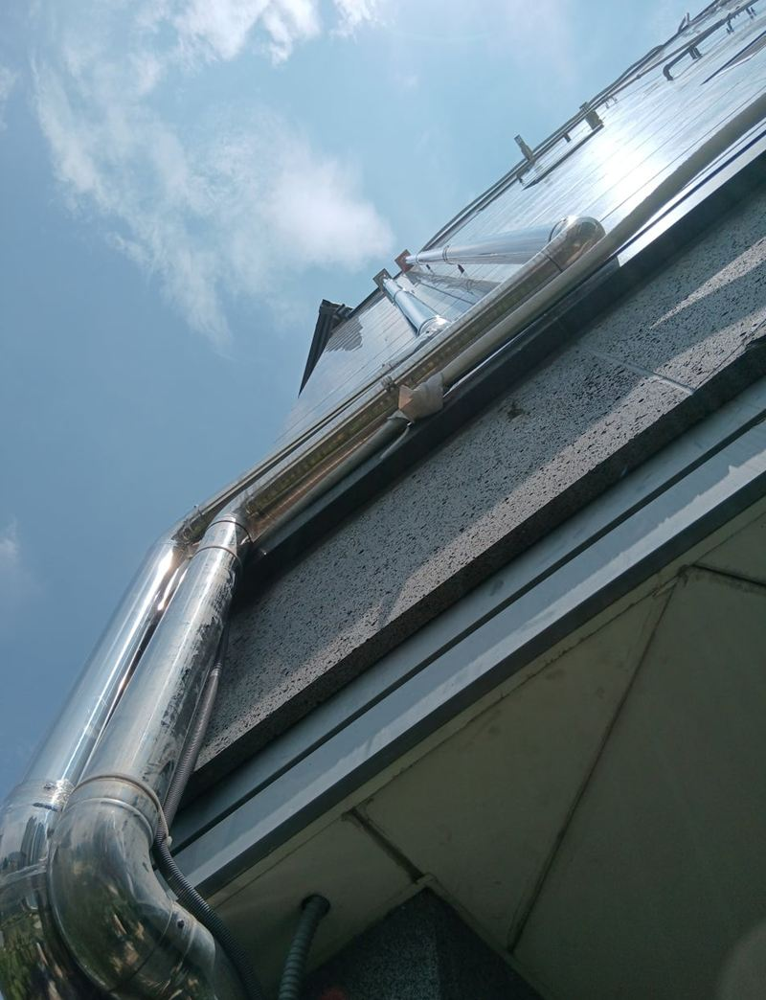
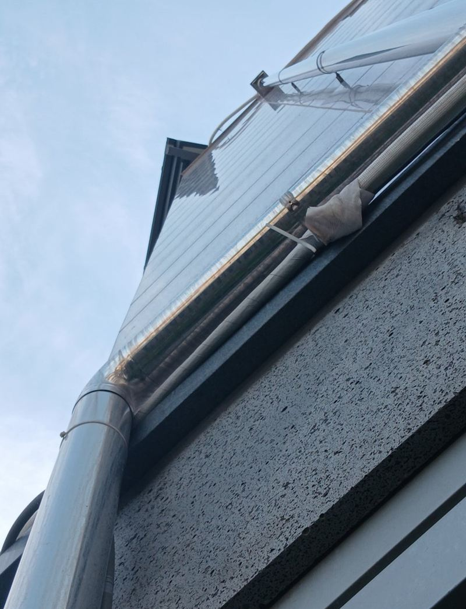
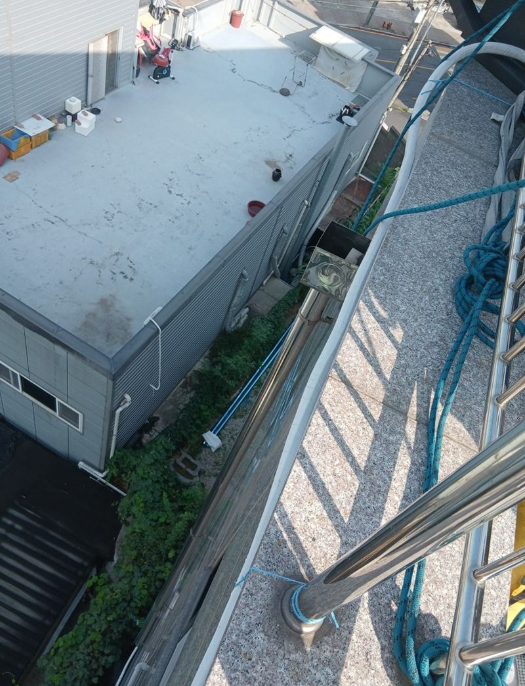
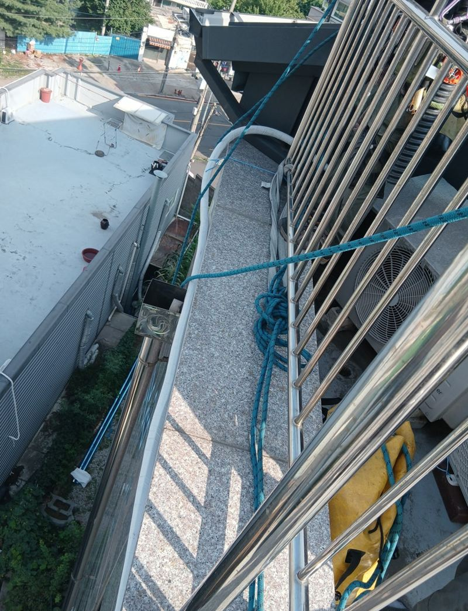
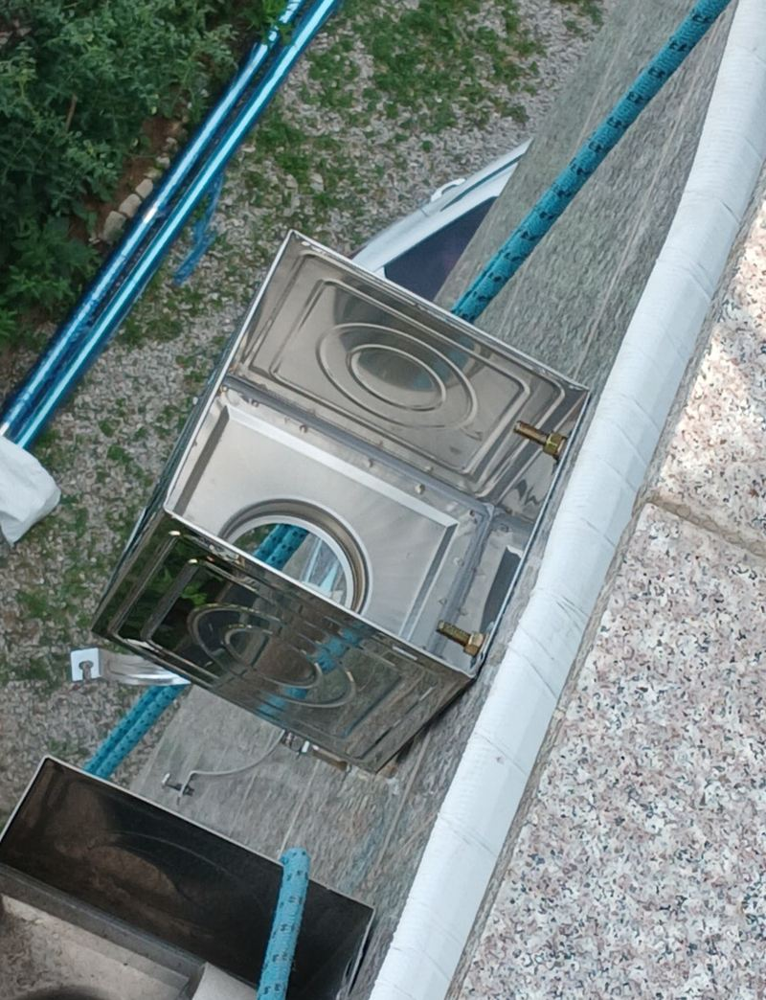
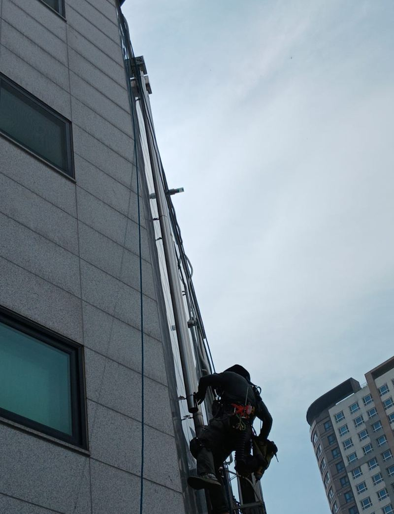

고양 외부 스텐 우수관 설치 비용


설치 전설치 후← 밀어서 전후 비교 →
"우수관이 있는데도 비만 오면 외벽에 물이 고여서 안쪽 벽지가 계속 젖어요." 확인해 보니 기존 우수관의 경사와 연결이 불완전해서 빗물이 한 구간에 모이고 있었어요. 물을 빼낼 길을 하나 더 만들려고 스테인리스 우수관을 추가로 달았어요.
| 현장 | 고양 덕양구 삼송동 빌라 외벽 |
|---|---|
| 문제 | 기존 우수관 경사·연결 불량으로 빗물 고임, 실내 벽지 젖음 |
| 제약 | 외부 공간이 좁아 스카이 장비 진입 불가 → 로프 작업 |
| 한 일 | 위치 선정 → 로프 하강하며 수직 배관 고정 → 빗물받이 연결 → 마감 |
우수관이 있는데도 벽이 젖는 이유
우수관은 있는 것만으로 충분하지 않아요. 지붕·옥상의 물이 관까지 잘 모여 들어가야 하고, 관은 꺾임 없이 아래로 내려가야 해요. 이 빌라는 기존 관으로 가는 경사가 애매하고 연결도 헐거워서, 물이 관에 다 들어가지 못하고 외벽 한쪽에 고였어요. 장마철에는 그 물이 벽 틈으로 스며 실내 벽지까지 적셨어요.


장비 대신 로프로
빌라 옆 공간이 좁아 스카이 장비를 세울 수 없었어요. 그래서 숙련된 작업자가 로프를 타고 위에서부터 내려오며 배관을 고정했어요. 로프 작업은 위험한 만큼 안전 장비를 갖추고 아래 통행을 막은 뒤 진행했어요.


설치하며 신경 쓴 세 가지
- 최대한 곧게우수관은 꺾임 없이 수직으로 내려와야 물이 빨리 빠지고 역류가 없어요.
- 스테인리스 자재바깥에서 비와 햇빛을 오래 맞는 자리라 PVC보다 오래가는 스텐을 썼어요.
- 빗물받이 연결위쪽 집수부와 단단히 이어 물이 새지 않게 했어요.


우수관 설치 비용을 정하는 것
| 항목 | 달라지는 이유 |
|---|---|
| 높이·길이 | 층수가 높을수록 자재와 작업 시간이 늘어요 |
| 작업 방식 | 사다리, 로프, 장비 중 무엇이 필요한지 |
| 자재 | 스텐, PVC 등 재질 |
| 연결 작업 | 빗물받이·기존 관과 잇는 범위 |
빌라 외벽 물 고임, 이런 신호를 보세요
- 비 온 뒤 벽 아래가 오래 젖어 있어요물이 관으로 다 못 들어가고 벽을 타고 흐르는 거예요.
- 실내 벽지에 얼룩이 번져요외벽 틈으로 빗물이 스며들고 있을 수 있어요.
- 우수관 이음부에서 물이 넘쳐요관이 막혔거나 경사가 맞지 않는 신호예요.
- 장마철마다 같은 자리가 문제예요배수 길을 하나 더 만드는 게 근본 해결이 되기도 해요.
우수관 설치 질문
기존 우수관을 고치는 게 낫지 않나요?
관 자체가 멀쩡하면 경사와 연결을 바로잡는 게 먼저예요. 구조상 물이 모이는 위치가 따로 있으면 이 현장처럼 추가 설치가 나아요.
로프 작업은 위험하지 않나요?
숙련된 작업자가 안전 장비를 갖추고 해요. 작업 중 아래 통행은 막아요.
스텐 우수관은 녹이 안 스나요?
일반 철관보다 녹에 훨씬 강해요. 이음부만 가끔 확인해 주시면 돼요.
실내 벽지는 언제 고치면 되나요?
물 문제를 먼저 해결하고 벽이 충분히 마른 뒤 도배하시는 게 좋아요.
옥상 방수도 같이 봐야 하나요?
물이 고이는 원인이 옥상 바닥이면 방수도 함께 검토해요.
상가 건물도 하나요?
네, 빌라·주택·상가 외벽 모두 해요.
기존 우수관은 그대로 두나요?
기존 관은 살려 두고 하나를 더 다는 방식이었어요. 기존 관 연결도 점검해요.
로프 작업은 날씨 영향을 받나요?
바람이 강하거나 비가 오면 안전을 위해 일정을 미뤄요.
추가 우수관 위치는 어떻게 정하나요?
물이 고이는 구간과 가장 가까우면서 곧게 내려올 수 있는 자리를 골라요.
설치 후 막히지 않게 하려면요?
윗부분 집수구에 낙엽 망을 달아 두면 막힘이 줄어요.
로프 작업 비용이 더 드나요?
장비 대신 숙련 인력이 들어가는 만큼 작업 방식에 따라 달라져요. 현장 사진으로 먼저 판단해요.
다른 렉산·우수관 현장
건물 외벽 전체와 물이 고이거나 젖는 자리를 찍어 보내 주세요.
전화 상담 010-4517-9872